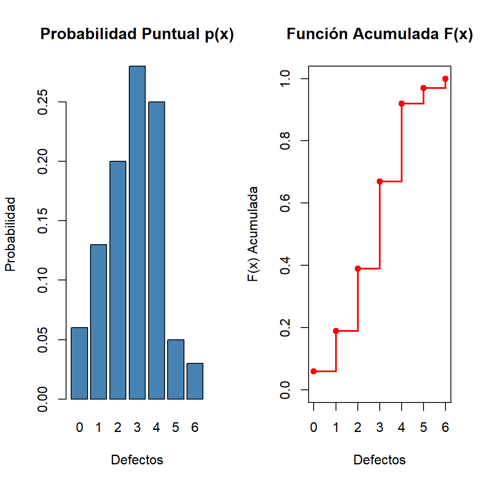
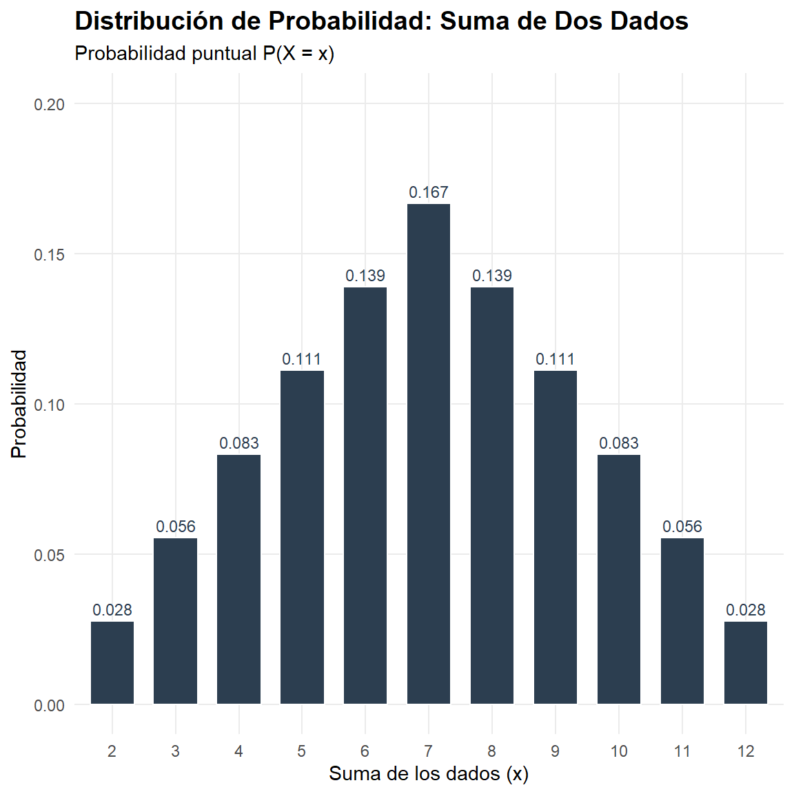
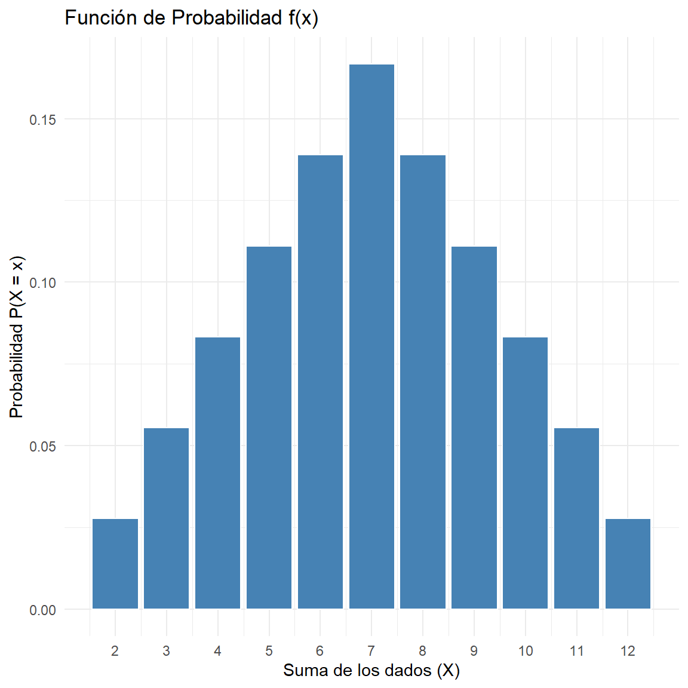
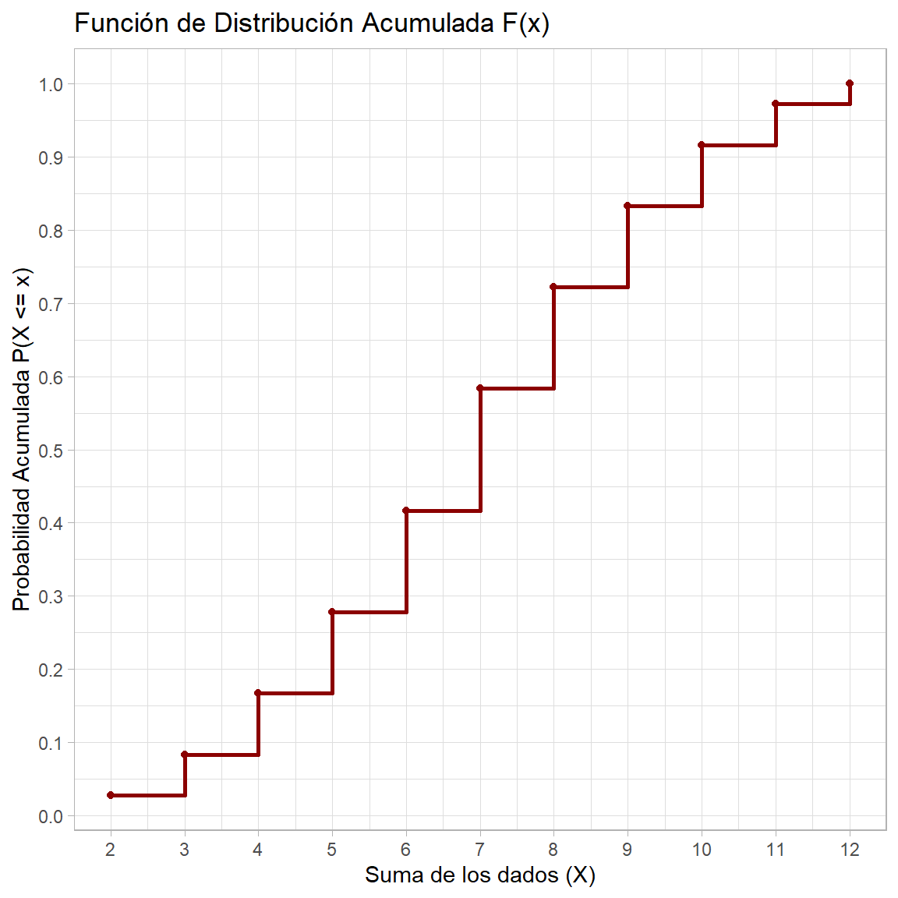

Ver código
options(
knitr.table.format = "html",
scipen = 999
)options(
knitr.table.format = "html",
scipen = 999
)
ipak <- function(pkg){
options(repos = c(CRAN="https://cloud.r-project.org"))
new.pkg <- pkg[!(pkg %in% rownames(installed.packages()))]
if(length(new.pkg)) install.packages(new.pkg, dependencies = TRUE)
invisible(lapply(pkg, function(p)
suppressPackageStartupMessages(library(p, character.only = TRUE))
))
}
packages <- c("tidyverse","kableExtra","psych","readxl")
ipak(packages)En este documento se analizan ejercicios relacionados con variables aleatoria discretas y su función de distribución acumulada. A partir de la información proporcionada, se busca calcular probabilidades específicas en distintos intervalos, así como determinar medidas importantes como la esperanza, la varianza y la desviación estándar.
Estos ejercicios permiten comprender cómo interpretar una función de distribución y cómo extraer de ella información clave sobre el comportamiento de una variable aleatoria en contextos reales, como el análisis de defectos en productos.
Una organización de consumidores anota regularmente el número de defectos importantes que se encuentran en un automóvil nuevo. De sus estudios ha encontrado que la función de distribución de la variable aleatoria X es:
Sea X una variable aleatoria discreta definida por su Función de Distribución Acumulada (CDF):
F(x) = \begin{cases} 0 & \text{si } x < 0 \\ 0.06 & \text{si } 0 \leq x < 1 \\ 0.19 & \text{si } 1 \leq x < 2 \\ 0.39 & \text{si } 2 \leq x < 3 \\ 0.67 & \text{si } 3 \leq x < 4 \\ 0.92 & \text{si } 4 \leq x < 5 \\ 0.97 & \text{si } 5 \leq x < 6 \\ 1 & \text{si } x \geq 6 \end{cases}
a) Calcular P(X = 2)
b) Calcular P(X \geq 3)
c) Calcular P(2 \leq X \leq 5)
d) Calcular P(2 < X < 5)
e) Obtener la Esperanza E[X], la Varianza Var(X) y la Desviación Típica \sigma.
Para resolver los incisos, lo primero que necesitamos es obtener la función de probabilidad p(x) = P(X = x). En una variable discreta, esto se calcula restando los saltos de la función acumulada: p(x_i) = F(x_i) - F(x_{i-1})
Calculamos p(x) para cada valor posible:
| x | F(x) Acumulada | p(x) Probabilidad |
|---|---|---|
| 0 | 0.06 | 0.06 |
| 1 | 0.19 | 0.13 |
| 2 | 0.39 | 0.20 |
| 3 | 0.67 | 0.28 |
| 4 | 0.92 | 0.25 |
| 5 | 0.97 | 0.05 |
| 6 | 1.00 | 0.03 |
a) Calcular: p[X = 2]
Como calculamos anteriormente, la probabilidad puntual se obtiene mediante la diferencia de las acumuladas:
p[X = 2] = F(2) - F(1) = 0.39 - 0.19 = \mathbf{0.20}
b) Calcular: p[X \ge 3]
Representa la probabilidad de que el valor sea 3, 4, 5 o 6. Utilizando el complemento, podemos calcularlo como:
P(X \ge 3) = 1 - P(X < 3) = 1 - F(2) p[X \ge 3] = 1 - 0.39 = \mathbf{0.61}
c) Calcular: p[2 \leq X \leq 5]
Incluye los valores 2, 3, 4 y 5.
Usando la acumulada:
p[2 \leq X \leq 5] = F(5) - F(1) = 0,97 - 0,19 = \mathbf{0,78}
d) Calcular: p[2 < X < 5]
Solo incluye los valores 3 y 4 (ya que es estrictamente mayor que 2 y menor que 5):
p[2 < X < 5] = p(3) + p(4) = 0,28 + 0,25 = \mathbf{0,53}
Gráfica de f(x) (Función de Probabilidad) y Gráfica de F(x) (Función de Distribución Acumulada)
# Datos del ejercicio
x <- 0:6
p_x <- c(0.06, 0.13, 0.20, 0.28, 0.25, 0.05, 0.03) # Probabilidades puntuales
F_x <- cumsum(p_x) # Probabilidades acumuladas
# Configurar para ver dos gráficas juntas
par(mfrow=c(1,2))
# Gráfica 1: Probabilidad Puntual (p(x))
barplot(p_x, names.arg=x, col="steelblue", main="Probabilidad Puntual p(x)",
xlab="Defectos", ylab="Probabilidad")
# Gráfica 2: Función Acumulada (F(x))
plot(x, F_x, type="s", col="red", lwd=2, main="Función Acumulada F(x)",
xlab="Defectos", ylab="F(x) Acumulada", ylim=c(0,1))
points(x, F_x, pch=19, col="red")
e) Esperanza, Varianza, Desviación y Coeficiente de Variación
| xi | p(xi) | xi · p(xi) | xi2 · p(xi) |
|---|---|---|---|
| 0 | 0.06 | 0.00 | 0.00 |
| 1 | 0.13 | 0.13 | 0.13 |
| 2 | 0.20 | 0.40 | 0.80 |
| 3 | 0.28 | 0.84 | 2.52 |
| 4 | 0.25 | 1.00 | 4.00 |
| 5 | 0.05 | 0.25 | 1.25 |
| 6 | 0.03 | 0.18 | 1.08 |
1). Esperanza Matemática (Media de la distribución)
Es el valor promedio que esperaríamos encontrar si revisáramos muchísimos automóviles.
Fórmula:
E[X] = \sum_{i=1}^{n} x_i \cdot p(x_i)
Aplicación:
E[X] = (0 \cdot 0,06) + (1 \cdot 0,13) + (2 \cdot 0,20) + (3 \cdot 0,28) + (4 \cdot 0,25) + (5 \cdot 0,05) + (6 \cdot 0,03)E[X] = 0 + 0,13 + 0,40 + 0,84 + 1,00 + 0,25 + 0,18
Resultado:
E[X] = 2,80
2). Varianza
Mide qué tan dispersos están los datos respecto a la media (en unidades al cuadrado).Primero calculamos E[X^2] que nos dio 9,78.
Fórmula:
Var(X) = E[X^2] - (E[X])^2
Aplicación:
Var(X) = 9,78 - (2,80)^2Var(X) = 9,78 - 7,84
Resultado:
Var(X) = 1,94
3). Desviación Estándar (Típica):
Es la raíz cuadrada de la varianza. Nos da la dispersión en las mismas unidades que la variable original (defectos).
Fórmula:
\sigma = \sqrt{Var(X)}
Aplicación:
\sigma = \sqrt{1,94}
Resultado:
\sigma \approx 1,3928
4). Coeficiente de Variación (CV)
Es una medida relativa que indica qué tan grande es la desviación en comparación con la media. Se expresa en porcentaje.
Fórmula:
CV = \left( \frac{\sigma}{E[X]} \right) \cdot 100 Aplicación:
CV = \left( \frac{1,3928}{2,80} \right) \cdot 100CV = 0,4974 \cdot 100
Resultado:
CV \approx 49,74\%
# Cargar librería para gráficas estéticas
if(!require(ggplot2)) install.packages("ggplot2")
library(ggplot2)
# 1. Datos del ejercicio
df <- data.frame(
x = 0:6,
p_x = c(0.06, 0.13, 0.20, 0.28, 0.25, 0.05, 0.03)
)
# 2. Valores calculados previamente
esperanza <- 2.80
varianza <- 1.94
desviacion <- 1.3928
cv <- 49.74
# 3. Crear la gráfica de f(x)
ggplot(df, aes(x = x, y = p_x)) +
# Dibujar las barras de probabilidad
geom_bar(stat = "identity", fill = "skyblue", color = "white", alpha = 0.7) +
# Añadir el rango de la Desviación Estándar (Sombreado)
annotate("rect", xmin = esperanza - desviacion, xmax = esperanza + desviacion,
ymin = 0, ymax = 0.30, alpha = 0.1, fill = "black") +
# Línea vertical para la Esperanza
geom_vline(xintercept = esperanza, color = "darkblue", linetype = "dashed", size = 1.2) +
# Etiquetas de texto para los resultados
annotate("text", x = esperanza + 0.2, y = 0.29, label = paste("E[X] =", esperanza), color = "darkblue", hjust = 0) +
annotate("text", x = 5, y = 0.25, label = paste("Var:", varianza), size = 4) +
annotate("text", x = 5, y = 0.23, label = paste("SD:", round(desviacion, 2)), size = 4) +
annotate("text", x = 5, y = 0.21, label = paste("CV:", cv, "%"), size = 4, fontface = "bold") +
# Configuración estética
scale_x_continuous(breaks = 0:6) +
labs(title = "Gráfica de f(x) con Estadísticos Descriptivos",
subtitle = "El área sombreada indica la dispersión (Media ± DE)",
x = "Número de Defectos (X)",
y = "Probabilidad p(x)") +
theme_minimal()
Sea X la variable aleatoria que representa la suma de los resultados obtenidos al lanzar dos dados equilibrados de seis caras cada uno.

A partir de esta definición, se requiere resolver los siguientes puntos:
a) ¿Cuál es el soporte de la variable aleatoria X?
b) Obtener la función de probabilidad (f(x)) de la variable y diseñar su respectivo diagrama de barras.
c) Hallar la función de distribución (F(x)) de X y representarla gráficamente mediante una función escalonada.
d) Calcular la probabilidad de que la suma de los resultados sea mayor que 4 y menor que 8.(Expresado como: P(4 < X < 8))
e) Calcular la probabilidad de que la suma sea mayor o igual que 4 y menor o igual que 8.(Expresado como: P(4 \leq X \leq 8))
f) Determinar los parámetros estadísticos de la distribución:
Valor esperado (Esperanza matemática E[X]).
Varianza (Var(X)).
Desviación típica (\sigma).
Coeficiente de variación (CV).
a) ¿Cuál es el soporte de la variable aleatoria X?
El soporte son todos los valores posibles que puede tomar la suma. La suma mínima es:
1+1 = \mathbf{2}
La suma máxima es
6+6 = \mathbf{12}
Soporte:
S_X = \{2, 3, 4, 5, 6, 7, 8, 9, 10, 11, 12\}
b) Función de probabilidad y diagrama de barras
Para obtener f(x) = P(X=x), contamos cuántas de las 36 combinaciones suman cada valor:
| x | Combinaciones posibles | f(x) = P(X = x) |
|---|---|---|
| 2 | (1,1) | 1/36 ≈ 0.028 |
| 3 | (1,2), (2,1) | 2/36 ≈ 0.056 |
| 4 | (1,3), (2,2), (3,1) | 3/36 ≈ 0.083 |
| 5 | (1,4), (2,3), (3,2), (4,1) | 4/36 ≈ 0.111 |
| 6 | (1,5), (2,4), (3,3), (4,2), (5,1) | 5/36 ≈ 0.139 |
| 7 | (1,6), (2,5), (3,4), (4,3), (5,2), (6,1) | 6/36 ≈ 0.167 |
| 8 | (2,6), (3,5), (4,4), (5,3), (6,2) | 5/36 ≈ 0.139 |
| 9 | (3,6), (4,5), (5,4), (6,3) | 4/36 ≈ 0.111 |
| 10 | (4,6), (5,5), (6,4) | 3/36 ≈ 0.083 |
| 11 | (5,6), (6,5) | 2/36 ≈ 0.056 |
| 12 | (6,6) | 1/36 ≈ 0.028 |

c) Función de distribución F(X)
Es la suma acumulada de las probabilidades anteriores:
F(2) = 1/36
F(3) = 3/36 (1+2)
F(4) = 6/36 (1+2+3) ... y así hasta
F(12) = 36/36 = 1
Gráficamente se representa como una escalera que llega hasta el 1.

d) P(4 < X < 8)
Son los valores 5, 6 y 7 (no incluye 4 ni 8):
# Definición de variables (si no están en el ambiente)
x <- 2:12
p_x <- c(1, 2, 3, 4, 5, 6, 5, 4, 3, 2, 1) / 36
# Cálculo: Filtramos los valores de p_x donde x está entre 4 y 8 (excluyéndolos)
prob_d <- sum(p_x[x > 4 & x < 8])
# Resultado
cat("La probabilidad P(4 < X < 8) es:", round(prob_d, 4))La probabilidad P(4 < X < 8) es: 0.4167e) P(4 \leq X \leq 8)
Aquí sí incluimos el 4 y el 8:
# Definición de variables (si no están en el ambiente)
x <- 2:12
p_x <- c(1, 2, 3, 4, 5, 6, 5, 4, 3, 2, 1) / 36
# Cálculo: Filtramos los valores de p_x donde x está entre 4 y 8 (incluyéndolos)
prob_e <- sum(p_x[x >= 4 & x <= 8])
# Resultado
cat("La probabilidad P(4 <= X <= 8) es:", round(prob_e, 4))La probabilidad P(4 <= X <= 8) es: 0.6389f) Esperanza, Varianza, Desviación y Coeficiente de Variación
# 1. Definición de los vectores de la variable aleatoria
x <- 2:12
casos <- c(1, 2, 3, 4, 5, 6, 5, 4, 3, 2, 1)
p_x <- casos / 36
# 2. VALOR ESPERADO (Esperanza Matemática)
# Se calcula como la suma del producto de cada valor por su probabilidad
esperanza <- sum(x * p_x)
# 3. VARIANZA (Var(X))
# Usamos la fórmula: E[X^2] - (E[X])^2
esperanza_x2 <- sum((x^2) * p_x)
varianza <- esperanza_x2 - (esperanza^2)
# 4. DESVIACIÓN TÍPICA (sigma)
# Es la raíz cuadrada de la varianza
desviacion <- sqrt(varianza)
# 5. COEFICIENTE DE VARIACIÓN (CV)
# Relación porcentual entre la desviación y la media
cv <- (desviacion / esperanza) * 100
# --- Visualización de Resultados ---
cat("Esperanza Matemática E[X]:", esperanza, "\n")Esperanza Matemática E[X]: 7 cat("Varianza Var(X):", round(varianza, 4), "\n")Varianza Var(X): 5.8333 cat("Desviación Típica (sigma):", round(desviacion, 4), "\n")Desviación Típica (sigma): 2.4152 cat("Coeficiente de Variación:", round(cv, 2), "%\n")Coeficiente de Variación: 34.5 %Gráfica de f(x) (Función de Probabilidad) y Gráfica de F(x) (Función de Distribución Acumulada)
library(ggplot2)
# Datos
df <- data.frame(
x = 2:12,
p_x = c(1, 2, 3, 4, 5, 6, 5, 4, 3, 2, 1) / 36
)
# Gráfica
ggplot(df, aes(x = x, y = p_x)) +
geom_bar(stat = "identity", fill = "steelblue", color = "white") +
scale_x_continuous(breaks = 2:12) +
labs(
title = "Función de Probabilidad f(x)",
x = "Suma de los dados (X)",
y = "Probabilidad P(X = x)"
) +
theme_minimal()
# Calculamos la acumulada
df$F_x <- cumsum(df$p_x)
# Gráfica
ggplot(df, aes(x = x, y = F_x)) +
geom_step(direction = "hv", color = "darkred", size = 1) +
geom_point(color = "darkred") +
scale_x_continuous(breaks = 2:12) +
scale_y_continuous(breaks = seq(0, 1, 0.1)) +
labs(
title = "Función de Distribución Acumulada F(x)",
x = "Suma de los dados (X)",
y = "Probabilidad Acumulada P(X <= x)"
) +
theme_light()